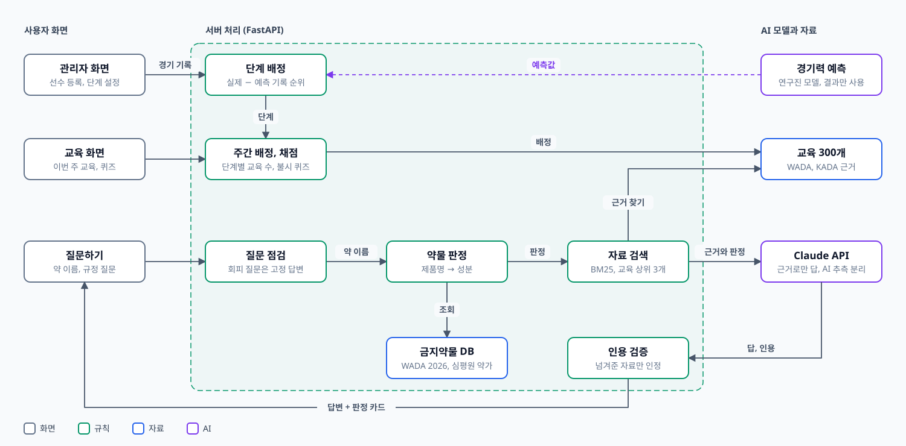
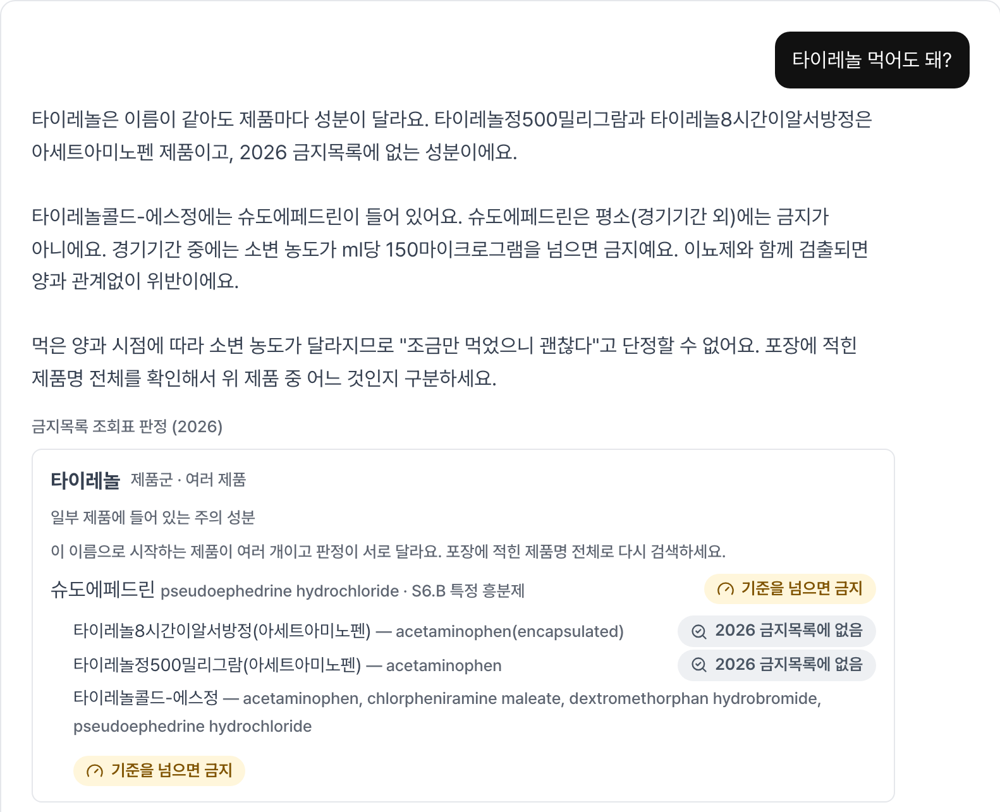

생성형 AI 기반 도핑 예방 교육 시스템
역도 선수마다 교육량을 다르게 주고, 약과 규정 질문에는 규정 문서를 근거로 답하는 교육 웹
Impact
- 선수마다 다른 교육량예측보다 기록이 오른 선수에게 교육을 더 줌단계마다 주당 교육 3~15개
- 근거 없는 답 차단인용이 넘겨준 문서인지 서버가 확인위험 질문 50개로 세 차례 점검
- 금지약물 판정금지 여부는 AI가 아니라 DB가 판정제품명으로 물어도 성분으로 찾아 판정
Background
연세대학교 운동생리학연구실의 역도 선수 도핑 예방 프로젝트에서 교육 웹과 챗봇을 만들었습니다.
연구진의 경기력 예측보다 기록이 크게 오른 선수일수록 교육을 더 많이 받습니다.
선수는 먹는 약의 성분을 잘 모르고 규정 문서는 길고 어려워, 바로 물어볼 수 있는 챗봇을 붙였습니다.
Architecture

Contributions
기록 변화에 따라 다른 교육량
모든 선수에게 같은 자료를 주던 교육을 선수마다 다르게 했습니다.
예측보다 기록이 크게 오른 선수일수록 교육과 불시 퀴즈가 늘어납니다.
근거 없는 답은 내보내지 않는 챗봇
서버가 찾은 규정 문서만 모델에 넘깁니다.
모델은 답과 인용을 JSON으로 돌려주고, 인용이 맞지 않으면 서버가 답을 버립니다.
근거 없는 부분은 'AI 추측'으로 따로 보여 줍니다.
금지 여부는 AI가 판정하지 않음
금지 여부는 WADA 금지목록으로 만든 DB가 판정하고, 모델은 설명만 합니다.
제품명은 심평원 약가마스터로 성분을 찾고, 이름이 같은 제품도 따로 판정합니다.

Troubleshooting
금지목록 추출본이 원문보다 느슨함
- 문제
- WADA 2026 금지목록 자동 추출본에서 금지방법 M1~M3가 "조건부". 원문은 상시 금지
- 원인
- 추출 결과를 원문과 맞춰 보는 단계가 없었음
- 해결
- 첫 추출 414항목을 원문 PDF와 색인에 대조해 결함 28건 수정. 색인 표제어 518개 전수 조회
- 결과
- 회귀 테스트 76개. 첫 추출본에 돌리면 36개가 실패해 결함을 실제로 잡는 것을 확인